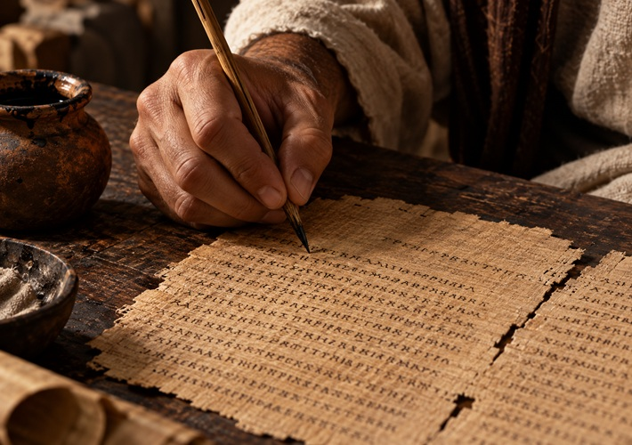
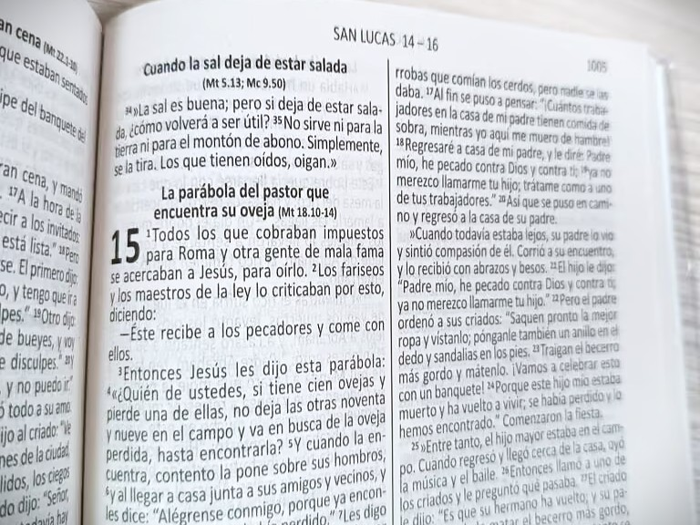
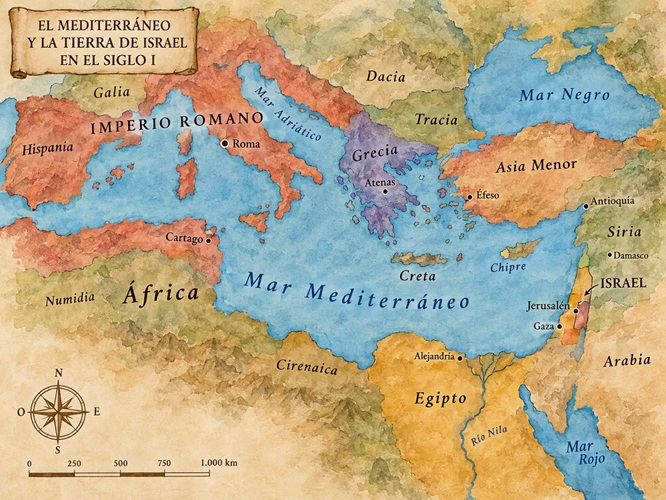

Sección I · La obra
El Nuevo Testamento es la segunda parte de la Biblia cristiana. Está formado por 27 libros escritos en griego durante el primer siglo después de Cristo. Estos libros cuentan la vida, las enseñanzas, la muerte y la resurrección de Jesús, además de explicar cómo comenzó y se extendió el cristianismo.

Sección II · Los libros
Los 27 libros se organizan en cuatro grupos según su género. Abre cada grupo para descubrir los libros que lo forman.
4 evangelios + 1 libro histórico + 21 cartas + 1 libro profético = 27
Canon completo — has recorrido los 27 libros.
Los Evangelios · la vida de Jesús
Cuentan la vida de Jesús: sus enseñanzas, sus milagros, su muerte y su resurrección, desde cuatro perspectivas distintas.
Libro histórico · el comienzo de la Iglesia
Hechos de los Apóstoles narra cómo nació la Iglesia y cómo el mensaje cristiano se extendió desde Jerusalén por el mundo romano.
Las Cartas · paulinas y generales
Enseñan y orientan a las primeras comunidades cristianas. Se subdividen en cartas paulinas (escritas por o en torno a Pablo) y cartas generales o católicas.
Libro profético · Apocalipsis
Presenta un mensaje profético y simbólico: visiones llenas de esperanza para los cristianos que sufrían persecución.
Sección III · El canon
El canon es la lista de libros reconocidos como parte de la Biblia.
REQUISITOS:
Apostolicidad – escrito por un apóstol o alguien cercano a ellos.
Antigüedad – del siglo I, época apostólica.
Ortodoxia – coherente con la fe y tradición ya aceptadas.
Uso extendido – leído y aceptado ampliamente por las comunidades cristianas.
Inspiración reconocida – percibido como verdadera Palabra de Dios.
Finalmente, en el siglo IV, se confirmó la lista de los 27 libros que conocemos hoy.

Sección IV · El contexto
Dominio romano
Judea estaba bajo el control de Roma. Por eso, en el Nuevo Testamento aparecen los gobernadores, los impuestos y la crucifixión, que era un castigo romano.
Cultura helenística (griega)
Aunque Roma gobernaba, la cultura y el idioma griego eran muy importantes en la región. Por eso, el Nuevo Testamento fue escrito en griego.
Judaísmo del Segundo Templo
Jesús y sus seguidores eran judíos. Su religión estaba relacionada con el Templo de Jerusalén y existían diferentes grupos, como los fariseos, saduceos, esenios y zelotes, que tenían distintas ideas religiosas y políticas.
Una buena red de comunicación
Roma tenía muchos caminos, rutas marítimas y ciudades conectadas. Además, el griego era un idioma común, lo que ayudó a que el cristianismo se difundiera y que las cartas llegaran a lugares lejanos.
Comunidades pequeñas y perseguidas
Los primeros cristianos eran grupos pequeños que a veces sufrían rechazo o persecución. Se reunían principalmente en casas, y los escritos del Nuevo Testamento los ayudaban a mantenerse unidos y fortalecer su fe.
27 libros · 4 grupos · un solo mensaje